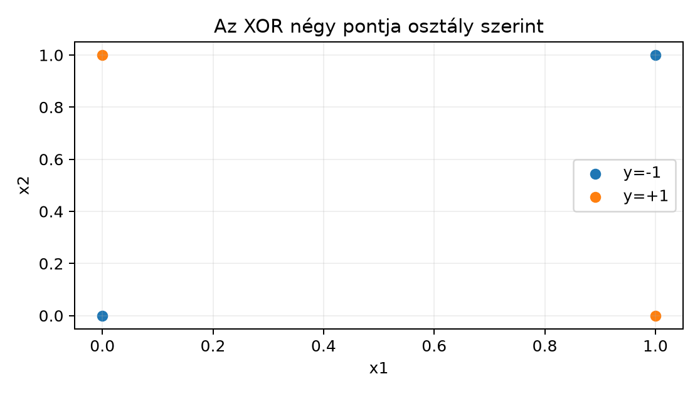
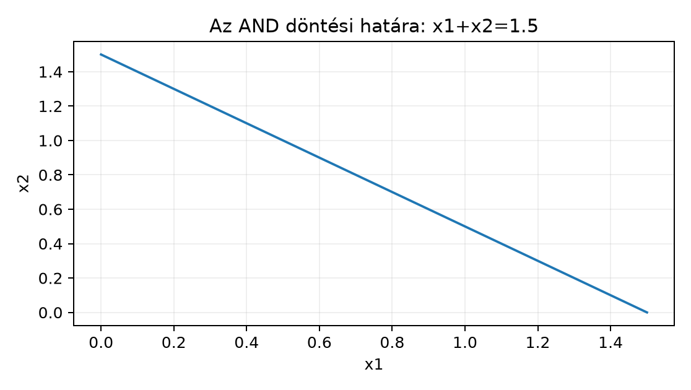

Ebben az alfejezetben a legkisebb paraméterezett osztályozót, a perceptront építjük fel. A cél, hogy három, gyakran összemosott fogalmat pontosan szétválasszunk: a döntési határt (decision boundary), az aktivációt (activation) és a tanulási szabályt (learning rule). Előismeretként a 4.4. I. ellenőrző pont: matematika és kód megfelelése jelölés- és gradientszemléletét, a 7.4. Numerikus stabilitás és jelentésmegőrző implementáció stabil numerikáját és a 8.4. II. ellenőrző pont: korrekt tanulási állítás tanulási állítások feltételrendszerét idézzük fel. A bináris cél fogalma az 5.1. Esemény, feltétel és véletlen változó alfejezetből ismerős, az empirikus kockázat pedig a 8.1. Kockázat, mintavétel és baseline alfejezetből.
Induló kérdés: az ÉS (AND) kapu négy bemeneti pontja elválasztható-e egyetlen egyenessel, a kizáró VAGY (XOR) négy pontja pedig miért nem? A válasz előtt pontos definíciókra van szükség.
Legyen a bemenet oszlopvektor; egy elemű batch sorvektoros jelölése . A bináris cél a perceptron konvenciója szerint ; ez nem azonos a kódolással, és a tanulási szabály miatt fontos.
Affin score. A perceptron a döntéshez egyetlen valós score-t számol:
A könyv általános affin konvenciójában ez a súlysor transzponáltja: . Batchben tehát , alakja , a skalár sorirányban broadcastolódik. A vektor a döntési határ normálisa, az eltolás.
Threshold és aktiváció. Klasszikusan küszöbértékkel is írható: a neuron akkor ad -et, ha . A küszöb és a bias közötti kapcsolat . Az aktiváció a score-ra alkalmazott nemlineáris függvény:
Rögzítjük, hogy a határon . Ez a függvény nem folytonos, ezért a klasszikus értelemben vett deriváltja a nullában nem létezik; ahol pedig létezik, ott az értéke nulla. Emiatt a gradienslépés vagy nem értelmezett, vagy nem mozdítaná el a paramétereket; ez az oka annak, hogy a perceptron tanítása nem közönséges gradienslépés.
Döntési határ. Ha , a halmaz egy affin hipersík. A degenerált eset kivétel: ekkor mellett ez a halmaz a teljes tér, mellett üres, és az alábbi távolságképlet nullával osztana. A döntési határ a paraméterezett modell geometriai objektuma, míg az aktiváció egy pont kiértékelése. A két paraméterezés különböző skálájú párokkal ugyanazt a hipersíkot adhatja; erre az F1 feladat kérdez rá. A hipersík mint halmaz negatív skalárral is változatlan, de az aktiváció és a predikció csak pozitív skalároknál marad azonos, negatív szorzó esetén előjelet vált. A score előjeles távolságtartalma ( esetén): a döntési határ távolsága egy ponttól . A margin egy pontra az előjeles távolság , egy tanítóhalmazra pedig ezek minimuma; ez a normálás teszi a normáját lényegessé a margin szempontjából.
Lineáris szeparálhatóság. A tanítóhalmaz lineárisan szeparálható (linearly separable), ha létezik , amelyre minden -re
A szigorú egyenlőtlenség azt jelenti, hogy egyetlen tanítópont sincs a döntési határon. Ha , a pontnak a pozitív féltérben, ha , a negatív féltérben kell lennie. Ez a feltétel a modell kapacitására vonatkozó adatfüggő tulajdonság, nem az algoritmusé.
Perceptron tanulási szabály. A perceptron algoritmus a hibás pontokra heurisztikus frissítést alkalmaz. Rögzített tanulási rátával, esetén, ahol :
A feltétel a határpontot is hibának tekinti, mert a konvergenciatétel szigorú elválasztást céloz. A frissítés iránya: ha és a score túl kicsi, a elmozdul irányába, így a score nő; ha , az ellenkező irányba. Ez a szabály nem egy sima veszteségfüggvény gradiense, ellentétben a 4.4. I. ellenőrző pont: matematika és kód megfelelése alfejezetben vizsgált differenciálható gráffal. A 7.4. Numerikus stabilitás és jelentésmegőrző implementáció stabil numerikájára itt nincs szükség: a perceptron csak szorzást és összeadást végez, a numerikus stabilitás a logisztikus modellnél válik lényegessé.
Számpélda a frissítésre: legyen , , , és a hibás pont , . Itt és , ezért , ; ugyanerre a pontra az új score , tehát a pont helyes lesz.
Klasszikus konvergenciatétel. Ha a tanítóhalmaz lineárisan szeparálható, akkor a perceptron algoritmus tetszőleges rögzített , rögzített kezdő és bármilyen olyan sorrend mellett, amelyben minden frissítés egy hibás mintára történik (például ciklikus bejárással), véges sok frissítés után olyan -t ad, amely az összes tanítópontot helyesen osztályozza. Az eredmény Rosenblatt klasszikus tétele [P01]; a szokásos konvergenciabizonyítás Novikoff [P02] eredménye. A perceptron tárgyalását lásd [B02]. A tétel itt a lineáris szeparálhatóságot, a rögzített pozitív tanulási rátát és a rögzített kezdőállapotot feltételező alakjában szerepel. Nem szeparálható adatra a tétel nem ígér konvergenciát.
A kötelező levezetési tételt a négy ponton bizonyítjuk. Legyenek a bemenetek a négyzet csúcsai, a cél pedig a kizáró VAGY:
A bizonyításhoz a konvex burok fogalmát használjuk. Egy halmaz konvex burka
$$\operatorname{conv}(S)=\Bigl\{\sum_{i=1}^m \lambda_i x_i:\ m\in\mathbb N,\ x_i\in S,\ \lambda_i\ge 0,\ \sum_i\lambda_i=1\Bigr\}.$$
Lemma. Ha egy halmaz minden pontjára , akkor minden pontjára is ; ugyanígy és esetén is. Bizonyítás: legyen . A score affin volta és miatt
ahol a második egyenlőségnél -t használtuk. Mivel és , legalább egy szigorúan pozitív, és az ehhez tartozó zárójeles tag szigorúan pozitív; a többi tag nemnegatív, ezért az összeg . Ugyanígy, ha minden pontra , akkor a teljes -ra is negatív.
Tétel. Nincs olyan , amelyre a fenti négy XOR-pont mindegyikére .
Bizonyítás. Indirekt tegyük fel, hogy létezik ilyen . Legyen és . A konvenció miatt a feltétel azt jelenti, hogy pontjaira , pontjaira pedig . A lemma (a és a változatban, ugyanazzal a bizonyítással) miatt és .
A pozitív osztály konvex burka a és közötti szakasz, a negatívé a és közötti szakasz. A két szakasz azonban metszi egymást, mert
Tehát ugyanaz a pont eleme -nak és -nak is. A lemmából erre a pontra egyszerre kellene és , ami lehetetlen. Az ellentmondás bizonyítja, hogy ilyen lineáris osztályozó nem létezik.
Geometriai olvasatban: a döntési határ egy egyenes, amely a síkot két félre osztja. A pozitív pontok konvex burka a másik átló, a negatívé az egyik átló; a két átló metszi egymást, ezért egyetlen egyenes sem tudja a két halmazt szigorúan elválasztani. A tétel bizonyítása saját, elemi levezetés.

A tételben szereplő négy pont koordinátái; nem futási kimenet.
Az ÉS kapu célja a kódolásból a perceptron céljára áttérve:
Válasszuk a , paramétereket. A score:
| Bemenet | Score | Aktiváció | Cél |
|---|---|---|---|
Mind a négy pont helyes, tehát a halmaz lineárisan szeparálható. A döntési határ:

A képletből számított értékek; nem futási kimenet.
A pont távolságra van a határtól, a negatív pontok pedig a határ túloldalán. A megadott nem az egyetlen helyes paraméterezés: például a és ugyanazt a döntési határt adja, de a score-ok kétszeresek. A kézzel választott érték: és bemenetek mellett a tanulási szabály minden frissítése egészértékű, ezért a labor algoritmusa ilyen bias-t nem állít elő; a laborban kapott példa a következő szakaszban szerepel.
Előfeltétel. Python 3.12 és a cnn-labor
csomag (uv sync); a labor a szakasz kódját használja, a
szükséges csomagokat a laborcsomag rögzített környezete biztosítja.
A labor célja: tanítsunk perceptront kis szeparálható adaton, majd
mutassuk meg, hogy a nem szeparálható XOR-on a tanítási ciklus soha nem
éri el a nulla hibát. Munkakönyvtár: lab/n033_perceptron/.
A kód CPU-n fut, NumPy-val, float64 dtype-tal. A seed a
keverés determinisztikusságát biztosítja, nem globális bitazonossági
ígéret.
# lab/n033_perceptron/perceptron_lab.py
# Futtatás: python perceptron_lab.py
import numpy as np
def train_perceptron(X, y, eta=1.0, max_epochs=100, seed=20261020):
"""Perceptron-tanítás. X: (N,d) float64, y: (N,) float64 ±1."""
rng = np.random.default_rng(seed)
d = X.shape[1]
w = np.zeros(d, dtype=X.dtype)
b = 0.0
for epoch in range(max_epochs):
idx = rng.permutation(len(y))
errors = 0
for i in idx:
x_i = X[i]
y_i = y[i]
s = float(np.dot(w, x_i) + b)
# A határpontot is hibának tekintjük: y_i*s <= 0.
if y_i * s <= 0.0:
w += eta * y_i * x_i
b += eta * y_i
errors += 1
if errors == 0:
return w, b, epoch + 1, True
return w, b, max_epochs, False
# AND: lineárisan szeparálható tanítóhalmaz
X_and = np.array(
[[0.0, 0.0], [0.0, 1.0], [1.0, 0.0], [1.0, 1.0]],
dtype=np.float64,
)
y_and = np.array([-1.0, -1.0, -1.0, 1.0], dtype=np.float64)
w_and, b_and, epochs_and, conv_and = train_perceptron(
X_and, y_and, eta=1.0, max_epochs=50
)
pred_and = np.where(X_and @ w_and + b_and >= 0.0, 1.0, -1.0)
print(f"AND: w={w_and}, b={b_and}, konvergencia epoch={epochs_and}, "
f"konvergens={conv_and}, hiba={int(np.sum(pred_and != y_and))}")
assert conv_and and epochs_and <= 50
assert np.array_equal(pred_and, y_and)
# XOR: nem szeparálható, a ciklus nem állhat meg
X_xor = np.array(
[[0.0, 0.0], [0.0, 1.0], [1.0, 0.0], [1.0, 1.0]],
dtype=np.float64,
)
y_xor = np.array([-1.0, 1.0, 1.0, -1.0], dtype=np.float64)
w_xor, b_xor, epochs_xor, conv_xor = train_perceptron(
X_xor, y_xor, eta=1.0, max_epochs=100
)
pred_xor = np.where(X_xor @ w_xor + b_xor >= 0.0, 1.0, -1.0)
print(f"XOR: w={w_xor}, b={b_xor}, lefutott epoch={epochs_xor}, "
f"konvergens={conv_xor}, hibák={int(np.sum(pred_xor != y_xor))}")
assert not conv_xor
assert epochs_xor == 100
assert int(np.sum(pred_xor != y_xor)) >= 1A futtatás kimenete (Python 3.12.3, NumPy 2.5.4, CPU, 1 szál; a seed 20261020):
AND: w=[2. 3.], b=-4.0, konvergencia epoch=12, konvergens=True, hiba=0
XOR: w=[0. 0.], b=-1.0, lefutott epoch=100, konvergens=False, hibák=2Az ellenőrzés két részből áll. Az AND-futásnak
conv_and = True értéket kell adnia, és a konvergencia
epochja nem lehet több a megadott maximumnál; ekkor a kapott
mind a négy pontot jól osztályozza, amit a kiírt hiba=0 is
mutat. A mért futásban
,
adódott; más frissítési sorrend más elválasztó hipersíkhoz is vezethet.
Az XOR-futás ezzel szemben conv_xor = False és
epochs_xor == 100 lesz, a végső paraméterekre pedig a 0/1
hibaszám legalább
.
A tanítás hibafeltétele a szigorúbb perceptron-kritérium
(),
a kiírt hiba/hibák viszont a
konvenció szerinti 0/1 hiba; a kettő csak a határra eső pontokban tér
el, és a tanítás azért használja a szigorúbbat, mert a konvergenciatétel
szigorú elválasztást biztosít. Ez nem a kód hibája, hanem a fenti tétel
következménye: nincs olyan lineáris osztályozó, amely mind a négy
XOR-pontot helyesen osztályozná.
Az ellenőrzött laborjelentések mintáját a kezdőlabor
lab/ellenorzott_report.json fájlja rögzíti; a fenti kimenet
a megadott kóddal futtatott, tényleges gépi napló.
F1 (fogalmi, nehézség 1). Definiálja egy-egy mondatban a döntési határt, az aktivációt és a tanulási szabályt a perceptron esetében. Ezután adjon meg két különböző párt a fenti AND-példához, amelyek ugyanazt a döntési határt határozzák meg, és mutassa meg, hogy a predikciók azonosak, de a score értékek nem. Beadandó: a három definíció és a két konkrét paraméterezés ellenőrzéssel.
F2 (levezetési, nehézség 2). Bizonyítsa, hogy az OR (VAGY) függvény a négy ponton lineárisan szeparálható. Adjon meg egy párt, írja fel mind a négy pontra a egyenlőtlenséget, és igazolja, hogy mindegyik teljesül. Beadandó: a paraméterek és a négy numerikus egyenlőtlenség.
F3 (implementációs, nehézség 1). Adott
,
,
,
és
.
Számítsa ki kézzel a score-t, a predikciót és a perceptron frissített
értékét. Írjon ehhez egy rövid NumPy kódot, amely assert
utasításokkal ellenőrzi a kézi számítást. Beadandó: a kézi számolás és a
futtatható kód.
F4 (hibakeresési, nehézség 2). Az alábbi kód AND-ra nem konvergál:
import numpy as np
X_and = np.array([[0.0, 0.0], [0.0, 1.0], [1.0, 0.0], [1.0, 1.0]])
y_and = np.array([-1.0, -1.0, -1.0, 1.0])
w = np.zeros(2)
eta = 1.0
for _ in range(50):
for x_i, y_i in zip(X_and, y_and):
s = float(w @ x_i) # bias hiányzik a score-ból
if y_i * s <= 0.0:
w += eta * y_i * x_i
# b += eta * y_i # a bias frissítése kimaradtMagyarázza el, miért lehetetlen ezzel a kóddal az AND megtanulása, mi a következménye a pontra nézve, javítsa a hibát, és mutassa meg, hogy a javított változat nulla hibát ér el. Beadandó: ok, következmény, javított kód és az ellenőrzés módja.
F5 (kísérleti/transzfer, nehézség 3). Tervezzen
perceptron-kísérletet a függelék A. szakaszában leírt GlyphLab
vertical és horizontal osztályaira. Két, Ön
által definiált jellemzőt használjon, például a szomszédos oszlopok,
illetve sorok abszolút különbségének átlagát (vízszintes, illetve
függőleges irányú gradiens). A terv tartalmazza: a megfigyelési
egységet, a split kezelését, a baseline-t, a metrikát, a maximális
epochok számát és az érvényességi korlátot arra az esetre, ha az adat
nem lineárisan szeparálható. Beadandó: írott protokoll; futtatás nem
kötelező.
F1. A döntési határ a hipersík; az aktiváció a score-ra alkalmazott függvény, amely predikciót ad; a tanulási szabály a hibás pontokon végrehajtott , frissítés. Ugyanazt az AND-határt adják például a és a párok: az első egyenlete , a másodiké , ami ugyanaz az egyenes; a négy ponton a score-ok , illetve ezek kétszeresei, a predikciók pedig mindkét párral . Minden -re a második score az első kétszerese, így pozitív skálázás miatt az előjelek és a predikciók azonosak, de a score-ok nem. Negatív szorzó esetén a hipersík ugyanaz marad, de a score előjele megfordul, ezért a predikciók is; ilyen pár tehát nem példa az azonos predikcióra.
F2. Az OR célja kódolásban: , , , . Válasszuk , . A négy feltétel:
Mind a négy szigorú egyenlőtlenség teljesül, tehát a halmaz lineárisan szeparálható. A döntési határ , amely a pontot elkülöníti a másik háromtól.
F3. A score:
A rögzített konvenció szerint , tehát a predikció . A tanulási szabály azonban a feltételt használja, és itt , ezért frissít:
A kód:
import numpy as np
w = np.array([0.5, -0.5], dtype=np.float64)
b = 0.5
x = np.array([1.0, 2.0], dtype=np.float64)
y = 1.0
eta = 0.1
s = float(w @ x + b)
assert y * s <= 0.0
w += eta * y * x
b += eta * y
assert np.allclose(w, [0.6, -0.3], atol=1e-12)
assert np.isclose(b, 0.6, atol=1e-12)Alakellenőrzés: és is alakú, a belső szorzat skalár, a frissítés dimenzióhelyes.
F4. A hiba oka: a score-ból hiányzik a , és a frissítés sem módosítja a bias-t. Ekkor a döntési határ mindig átmegy az origón, mert függetlenül értékétől. Az AND célja szerint a osztályba tartozik, tehát a feltétel minden epochban hibát jelez erre a pontra. A frissítés azonban , vagyis nem változik az origóra; a hiba örökké fennmarad. A javítás a bias beillesztése és frissítése:
import numpy as np
X_and = np.array([[0.0, 0.0], [0.0, 1.0], [1.0, 0.0], [1.0, 1.0]])
y_and = np.array([-1.0, -1.0, -1.0, 1.0])
w = np.zeros(2)
b = 0.0
eta = 1.0
for _ in range(50):
errors = 0
for x_i, y_i in zip(X_and, y_and):
s = float(w @ x_i + b)
if y_i * s <= 0.0:
w += eta * y_i * x_i
b += eta * y_i
errors += 1
if errors == 0:
break
pred = np.where(X_and @ w + b >= 0.0, 1.0, -1.0)
print(f"w={w}, b={b}, hiba={int(np.sum(pred != y_and))}")
assert np.array_equal(pred, y_and)Visszaellenőrzés: a javított kódban a
pontra
negatívvá válik, így
,
és a hiba megszűnik. A fenti önálló változat futtatva
,
,
hiba
eredményt ad; a labor train_perceptron függvénye ugyanezt a
viselkedést conv_and = True értékkel jelzi.
F5. Egy lehetséges protokoll. Kérdés: a két
jellemzőn lineárisan szeparálható-e a vertical/horizontal osztály? Adat:
a függelék A. A GlyphLab adatkészlet szakaszában
rögzített data/images.npy, data/labels.npy és
data/metadata.csv; az utóbbi scene_id és
split oszlopa adja a jelenetszintű felosztást. A két
osztály (vertical, horizontal) szűrése után
csak a train halmazon tanítunk, a val és test halmaz független
kiértékelés. Jellemzők: vízszintes irányú gradiens
= a szomszédos oszlopok abszolút különbségének átlaga (a függőleges
éleket emeli ki); függőleges irányú gradiens
= a szomszédos sorok abszolút különbségének átlaga (a vízszintes éleket
emeli ki); mindkettőt float64-ben számoljuk (a tárolt képek float32-ek,
a jellemzőszámításnál alakítjuk át), összhangban a labor perceptronjának
float64 dtype-ával. Megfigyelési egység: jelenet, mert a split
jelenetszintű; a tanítási hibát a train képeken mérjük, a validáció és a
teszt ettől független kiértékelés. Baseline: mindig a gyakoribb osztály
predikciója. Metrika: 0/1 hiba a train képeken (ez a tanítási hiba),
valamint a független val/test halmazokon. Erőforrás: CPU, NumPy, maximum
epoch. Korlát: ha a tanítási hiba nem éri el a nullát, a perceptron
modell a két jellemzőn nem lineárisan szeparálható; ekkor nem vonhatunk
le következtetést a perceptron „pontosságáról”, legfeljebb a
baseline-hoz viszonyított heurisztikus eltérést mérhetjük. A teszt csak
a végleges paraméterek rögzítése után értékelhető, ahogy azt a 8.4. II. ellenőrző pont: korrekt tanulási állítás
lezárta.
Tipikus tévedés. „A perceptron azért tanul, mert az agy neuronjait utánozza.” Ez a biológiai analógia motiválhatja a modellt, de nem matematikai bizonyíték semmilyen tulajdonságra. A biológiai idegsejtek létezése nem segít az XOR megtanulásában; a fenti tétel bizonyítja, hogy egyetlen perceptron erre matematikailag képtelen, bármennyire is „neuron-szerű”. Az analógia heurisztika, a szeparálhatóság tétel.
Önellenőrzés. Tudja-e: (1) felírni a score, a döntési határ és az aktiváció képletét; (2) megmagyarázni, miért a frissítési feltétel és miért nem ; (3) bizonyítani a XOR tételt a két átlós konvex burok metszetével; (4) megmondani, miért nem gradienslépés a perceptron frissítés?
Visszatekintés. A 4.4. I. ellenőrző pont: matematika és kód megfelelése gráfjában a frissítés egy differenciálható loss gradiense volt; itt a nemsima művelet, ezért a tanulási szabály külön fogalom. A 8.1. Kockázat, mintavétel és baseline empirikus kockázat nyelvén a perceptron a hibát csökkenti heurisztikus módon, anélkül hogy a populációs kockázatra koncentrációs korlátot adnánk. Az 5.1. Esemény, feltétel és véletlen változó bináris célja itt kódolásban jelenik meg; a valószínűségi értelmezéshez a következő fejezetekben a logisztikus modellre lesz szükség.
A perceptron egyetlen affin score-t, , számol, majd a aktivációval előrejelzést ad. A döntési határ a hipersík, és a tanítóhalmaz lineáris szeparálhatósági feltétele, hogy minden . A tanulási szabály hibás pontokon , frissítést végez; lineárisan szeparálható adatra a klasszikus tétel véges konvergenciát ígér. Az XOR négy pontján konvex burkokkal bizonyítottuk, hogy nincs elválasztó hipersík: a két osztály konvex burka metszi egymást. A modell tehát világosan korlátozott, és a korlát nem biológiai, hanem geometriai állítás.
A következő 9.2. MLP és nemlinearitás egységben az MLP-t vezetjük be, ahol rejtett rétegek és nemlineáris aktivációk teszik lehetővé a nemlineáris döntési határok, így az XOR megtanulását is. A perceptron a legegyszerűbb építőelem, amelynek korlátja motiválja a mélyebb modelleket.